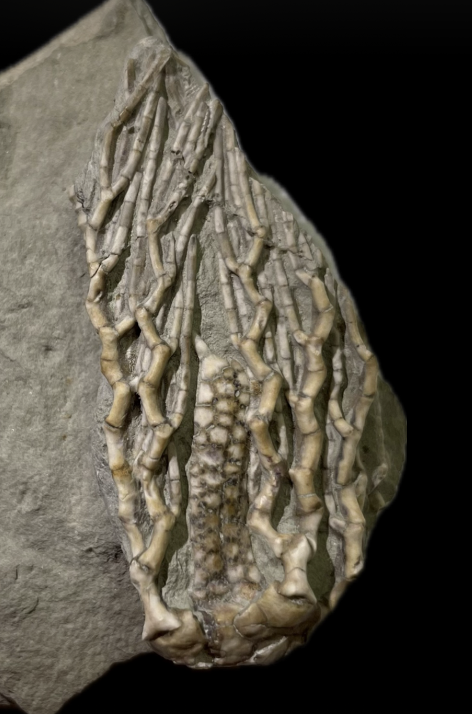

Clathrocrinus clinatus
• Pennsylvanian
• LaSalle Limestone, Bond Formation
• Pontiac, Illinois, USA
Size: 5.5 cm crown
This species is similar to "C. clathratus", except that the brachials articulate at broader angles causing the arms to form a noticeably milder zig-zag pattern. In addition, the calyx is smooth and unornamented with nonimpressed sutures compared to "C. clathratus". Also note the prominent spine-tipped anal tube that is visible on this particular specimen.
|

|
Copyright © 2024 by Samuel Kim, all rights reserved